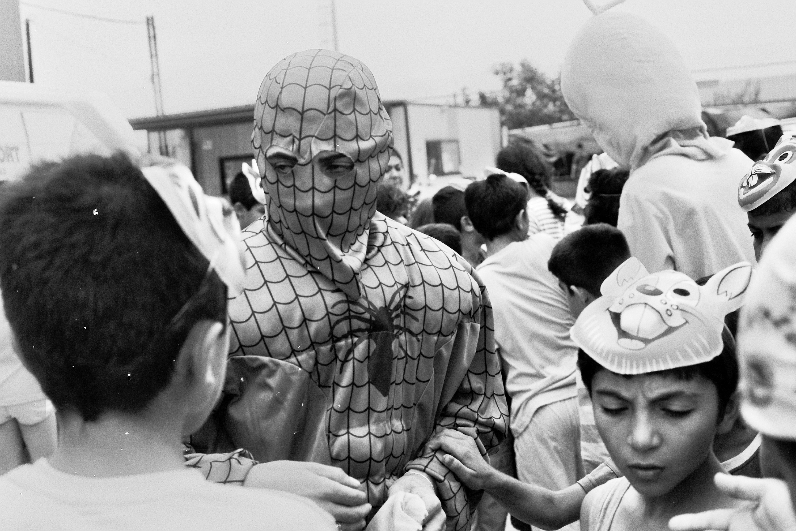

Journal : Chargement...
Le temps travaille ses matériaux. Nous les humains, le découpons en cycles communs, en événements, en gestes, en phénomènes, en objets, pour concevoir le réel dans lequel nous sommes compris ensembles. Nous découpons le temps bien davantage que nous ne le façonnons, et nous façonnons moins les cycles, les gestes, les objets, que nous ne les délimitons pour les étudier séparément. En écrivant la fable des séparations nécessaire au discernement spécifiquement humain de notre cerveau, en élaborant un découpage instrumental, un bornage qui nous est propre, les humains façonnent des frontières de temps et d’étendue pour pouvoir penser, mais le temps et l’étendue façonnent les humains qui les pensent.
---
Fra.
10 ans d'expérience sonore collective au long du chemin,
Un flux audio continu, une photographie et une entrée de journal publiées chaque matin,
sélectionnées au hasard dans une archive fluide comme la mémoire.
Une arche d'étrangeté divisée en une multitude d'embarcations chancelantes.
Ita.
10 anni di esperienza sonora collettiva lungo il cammino,
Un flusso audio continuo, una fotografia e una pagina di diario pubblicate ogni mattina,
selezionate a caso da un archivio fluido come la memoria.
Un'arca di stranezza divisa in una moltitudine di imbarcazioni traballanti.
Por.
10 anos de experiência sonora coletiva ao longo do caminho,
Um fluxo de áudio contínuo, uma fotografia e uma entrada de diário publicadas todas as manhãs,
selecionadas ao acaso de um arquivo fluido como a memória.
Uma arca de estranheza dividida numa multidão de embarcações vacilantes.
Ελλ.
10 χρόνια συλλογικής ηχητικής εμπειρίας κατά μήκος του δρόμου,
Pοή συνεχούς ήχου, μια φωτογραφία και μια καταχώριση ημερολογίου που δημοσιεύονται κάθε πρωί,
επιλεγμένα τυχαία από ένα αρχείο ρευστό σαν τη μνήμη.
Μια κιβωτός αλλοκοτότητας χωρισμένη σε ένα πλήθος από κλονιζόμενες βάρκες.
عر.
١٠ سنوات من التجربة الصوتية الجماعية على طول الطريق،
تدفق صوتي مستمر، وصورة فوتوغرافية، ومدخلة في مذكرات تُنشر كل صباح،
مختارة عشوائيًا من أرشيف مرن كالأرشيف السائل للذاكرة.
فلُكٌ من الغرابة مقسّم إلى مجموعة من القوارب المتأرجحة.
Piem.
10 àn d'esperiensa sonor-a colativa arlongh ël camin,
Un fluss àudio continuo, una fotografìa e una vos ëd giornal publicà tüt i matin,
selesionà a cas da n'archivio fluìd tame la memòria.
N'arca ëd straniesa dividùa ant un moltitudin d'imbarcassion trabolante.
Eng.
10 years of collective sound experience along the way,
A continuous audio stream, a photograph, and a journal entry published every morning,
randomly selected from an archive as fluid as memory.
An ark of strangeness divided into a multitude of faltering craft.
---
Les Barques, Le Barche, The Barques, τις βάρκες , القوارب
Abou Ali, Aicha Mansouri, Ali Dehan, Alia Dhahri, Ammar, Anna Maria Civico, Anna Rosetti, Antoine Loyer, Arafat Sadallah, Arthur Chambri, Aydın Çıracıoğlu, Brahim Bouslahi, Mohamed Znaidi, Rai Uno, Chafik Dammak, Chamseddine Zitouni, Chiara Vigo, Claudia Gianotta, Coro feminino da Dona Joaquina, Cristina Vetrone, Davide Russo, Dori Rosetti, Economat Redeyef, El Haj, Emmanuelle Nizou, Fanny George, Frode Bjornstad, Gaml, Giaccomo Parmeggiani, Giovanna Turco, Giuseppe Campa, Gruppo Città di Trapani, Guillaume Maupin, Hadra Tamerza, Haythem Ben Bousaha, Haythem Zakaria, Jean-François Favreau, Jeanne Marti, Joske Malbeek, Laid Bouoni, Léo Rump, Lise Barkas, Loto Retina, Loup Uberto, Lucas Ravinale, Luigi de Santis, Lukas De Clerck, Manuel Pueyo, Maria Rita Piga, Mario Gabola, Marwan Akrouti, Massoud Mansouri, Maxime Lacôme, Mondine di Bentivoglio, Nabina Gelezi, Nathalie Guida, Nicola Rosetti, Noemi, Oficina Rua do Relógio Alcaçovas, Okacha Ben Salah, Paola Magurano, Pietro Romito, Rabia Ezzedini, Radio Hito, Raïuno, Rhili Mohamed, Rochdy Machouch, Rosaria Cista, Saad Tabbabi, Salah Oucheti, Salah Tabbabi, Salvatore Urso, Scusciati, Simon Rummel, Soledad Zarka, Tahar Ezzedini, Tenore di Oliena, Vicenzo Lipari, Violeta Lopez Lopez, Yagoutha Belgacem, Yasmina Znaidi, Zaouia de Redeyef, Jure Miloš, Zdravko Vuksan, Iko Matković, Branko Sucur, Ivan Karoglan (Cibić), Sonja Busić, Tona Busić, Vesna Rebić, Zlata Rebić...